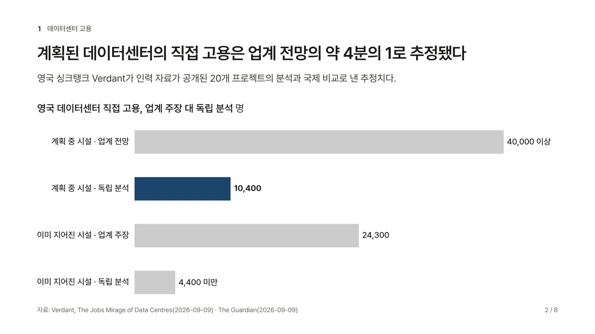

2026.06
AI 뉴스 지식 구축 에이전트
AI 뉴스를 수집하고 검증해 Notion 페이지와 발표 자료로 발행하는 멀티 에이전트 파이프라인입니다. 검증한 뉴스는 엔티티와 관계로 정리해 지식 DB에 저장하고 이미 다룬 뉴스를 걸러 내는 데 씁니다. 8회 발행한 운영판에 온톨로지 정의 파일, 가드레일 훅, MCP 서버를 더해 개편했고 개편판은 과거 실행 기록으로 검증했습니다.
- 역할
- 선별 기준, 출처 등급, 문체 기준 결정. 가드레일 훅과 MCP 서버의 등록 승인
- AI 활용
- Claude Code로 서브에이전트 정의, 스크립트, 훅, MCP 서버 구현
- 기술
- Claude Code(서브에이전트 5개, 스킬 3개, 훅 1개), MCP, Python, SQLite, 로컬 임베딩
- 규모
- 운영판 8회 발행, 지식 DB에 뉴스 614건 누적
- 수상
- 사내 제1회 AX AI Agent 공모전 금상(1등, 운영판), 2026.10
결과
- 이미 다룬 뉴스로 판단해 제외한 후보개편판. 유사도만 쓰던 기준에 날짜와 엔티티 근거를 추가하고 지난 호 후보 603건으로 다시 계산. 남은 3건은 실제로 같은 뉴스이고 같은 URL이 다시 수집된 59쌍은 그대로 걸러짐
- 고치기 전 103건고친 뒤 3건
- 무관한 뉴스를 비슷한 뉴스로 잘못 분류한 비율운영판. 자동 라벨링한 뉴스 쌍 356개로 유사도 임계값을 다시 정함
- 고치기 전 43%고친 뒤 약 6%
- 가드레일 훅이 정상 명령을 잘못 막은 경우개편판. 과거 실행의 도구 호출 3,536건을 훅에 다시 입력. 차단 기준은 단위 테스트 41건으로 확인
- 0건
발표 자료
자동 발행한 0917호의 내용으로 발표 자료 템플릿을 다시 만들었습니다. 한 장에 메시지 하나를 두고 도표를 크게 넣었으며 막대 도표는 다이어그램 스킬로 다시 그렸습니다. 수치와 인용은 검증 단계의 자료와 다시 대조했습니다.

파이프라인
메인 세션이 서브에이전트 5개에 작업을 배정하고 단계 사이의 결과는 파일로 전달합니다. 기간 필터, 중복 제거, 발행 전 검사처럼 LLM이 필요 없는 단계는 스크립트가 처리합니다.
뉴스를 발행하는 단계
- 1LLM수집등록한 소스 65곳과 검색 엔진에서 수집
- 2코드필터와 중복 제거최근 14일의 뉴스만 남기고 같은 URL은 병합
- 3LLM검증1차 출처에서 수치와 날짜를 확인
- 4LLM지식 추출메인 세션이 주제, 엔티티, 관계를 정해진 형식으로 추출
- 5코드이미 다룬 뉴스 확인지식 DB에서 같은 뉴스와 후속 뉴스를 조회
- 6LLM선별깊게 다룰 뉴스 3건을 선정
- 7LLM작성과 조립검증한 수치만 인용해 발표 자료를 작성
- 8코드발행 전 검사구조, 수치, 빈 그림을 검사해 통과한 자료만 발행
운영판은 캘린더 일정에 맞춰 수집 단계와 발행 단계의 헤드리스 세션을 띄웠습니다. 수집에 29분이 걸리는데 15분 타임아웃에 끊기던 무인 실행은 타임아웃을 실측값에 맞추고 PID 가드, 락, 재시도 상한 3회를 넣어 고쳤습니다. 프롬프트로만 지시한 단계가 자동 실행에서 빠진 적이 있어서 필수 단계는 셸 스크립트로 실행합니다. 발행 전에는 구조 검사, 본문 수치 대조, 그림 검수를 모두 통과해야 합니다.
온톨로지(개편판)
뉴스에서 추출하는 엔티티 6종과 관계 12종, 관계마다 올 수 있는 엔티티 유형을 YAML 정의 파일 하나로 정의했습니다. 파이프라인의 역할, 단계, 단계별 출력 파일도 같은 파일에 있습니다.
검증 스크립트가 이 파일로 추출 결과를 검사하고 파이프라인 문서도 이 파일에서 생성합니다. 같은 대상을 가리키는 다른 표기는 대표 이름 하나로 병합합니다.
- 엔티티 유형
- 조직
- 인물
- 모델
- 제품
- 논문
- 개념
- 관계 유형
- 발표
- 출시
- 인수
- 반박
- 후속
- 규제
- 협력
- 경쟁
- 적용
- 개선
- 경고
- 연구
이 구조로 답해야 하는 역량 질문(competency question) 6개를 정하고 질문마다 답을 내는 MCP 도구를 지정했습니다.
| 질문(6개 가운데 3개) | 답하는 MCP 도구 |
|---|---|
| 이 뉴스는 이전에 이미 다룬 뉴스인가 | check_coverage |
| 이 조직이나 제품을 지금까지 몇 번 다뤘는가 | get_entity |
| 이번 발행은 어느 단계까지 끝났고 무엇이 발행을 막고 있는가 | issue_status |
권한과 가드레일(개편판)
외부 웹의 글을 읽는 역할에는 시크릿과 발행 권한을 주지 않았습니다. 수집한 글에 숨은 지시문(프롬프트 인젝션)을 따르더라도 훅이 역할을 확인해 시크릿 접근과 발행을 막도록 했습니다.
| 역할 | 모델 | 외부 웹의 글 | 시크릿과 발행 권한 |
|---|---|---|---|
| 수집 | Haiku | 읽음 | 없음 |
| 검증 | Opus | 읽음 | 없음 |
| 선별 | Opus | 읽지 않음 | 없음 |
| 작성 | Opus | 읽지 않음 | 없음 |
| 조립 | Sonnet | 읽지 않음 | 있음 |
권한은 온톨로지 정의 파일에 선언하고 가드레일 훅이 도구 호출마다 검사합니다. Notion에 발행하는 호출은 발행 전 검사를 통과했을 때만 허용합니다.
가드레일 훅이 검사한 명령(가짜 토큰 파일로 실행)
cat config/.notion_token메인 세션에서 실행차단시크릿 값을 화면에 출력TOKEN="$(cat config/.notion_token)"; echo "len=$(echo -n "$TOKEN" | wc -c | tr -d " ")"메인 세션에서 실행통과값을 변수로 받아 길이만 출력TOKEN="$(cat config/.notion_token)"; echo done수집 서브에이전트에서 실행차단수집 역할에는 시크릿 권한이 없음
차단할 명령과 허용할 명령은 단위 테스트 41건으로 확인했습니다. 과거 실행의 도구 호출 3,536건을 훅에 다시 입력했을 때는 정상 발행에 쓰인 명령을 잘못 막은 경우가 없었습니다.
MCP 서버와 플러그인(개편판)
에이전트가 지식 DB를 조회할 수 있도록 읽기 전용 MCP 서버를 만들었습니다. check_coverage 도구는 파이프라인에서 이미 다룬 뉴스를 확인하는 단계가 쓰는 코드를 그대로 호출합니다. 그래서 에이전트가 받는 답과 파이프라인의 결과가 같습니다.
- search_news
- 누적한 뉴스 검색
- get_entity
- 엔티티의 대표 이름과 별칭, 다룬 회차 조회
- check_coverage
- 후보 뉴스가 이미 다룬 뉴스인지, 후속 뉴스인지 확인
- issue_status
- 회차별 진행 단계와 발행을 막는 항목, 비용 조회
서버는 프로토콜 메시지 25개 검사를 통과했고 공식 SDK 클라이언트로 한 접속과 호출 테스트도 통과했습니다. 스킬, 서브에이전트, 훅, MCP 서버는 플러그인 하나로 패키징해 버전과 변경 기록을 관리합니다. 설치한 뒤에는 점검 스크립트가 15개 항목을 검사합니다.
모델 배정과 비용
수집은 Haiku, 검증·선별·작성은 Opus, 조립은 Sonnet으로 실행합니다. 실행 로그에서 역할별 토큰과 비용을 추출해 기록합니다. 정상 종료한 실행 10건의 추정 비용 중앙값은 5.35달러입니다(정가 기준).
역할별 비용 비율(수집과 발행 실행 31건, 추정)
- 메인 세션31.0%
- 수집26.0%
- 검증15.5%
- 선별12.7%
- 조립7.6%
- 작성4.8%
- 그 밖2.4%
비용이 가장 큰 곳은 작업을 배정하는 메인 세션이었습니다. 개편판에는 세션 비용 상한을 넣어 상한을 넘으면 자동 재시도를 멈추게 했습니다.